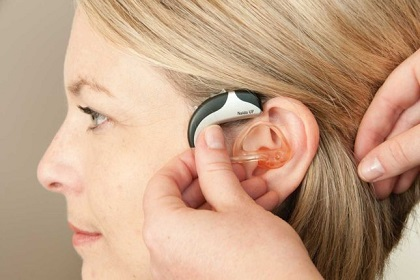

2.Hearing and speech therapy
Speech difficulties treatment
The speech and speech disorders clinic is one of the modern clinics in our Arab society.
This clinic is distinguished by its diagnostic and treatment services for all patients of three years or more.
Adults and the elderly who suffer from speech,speech and language problems can benefit from the services of this clinic thanks to its modern equipment and advanced technologies.
The Speech and Language Clinic designs treatment programs individually based on the client's abilities and language skills after a full evaluation.
The family of the child or patient is involved in the treatment program to ensure the greatest success and impact.
Cases that are treated:
- Treating all individuals from the age of three years and above (adult children and the elderly) who suffer from speech, language and hearing problems.
- Delayed speech and language.
- Verbal difficulties.
- Stuttering or stuttering.
- Hearing problems.
- sound problems.
- Disorders resulting from the cleft lip and throat.
- Speech and language difficulties resulting from brain problems such as (aphasia, etc.).
- Speech disorders resulting from other disabilities such as: (mental retardation, cerebral palsy, autism, Mongolianism).
- Providing advice on how to deal with people with special needs.
- Learning difficulties (difficulties of reading, writing and expression) of all degrees.
- Counseling sessions for families of children with speech and language problems.

**TO BOOK CLICK HERE**